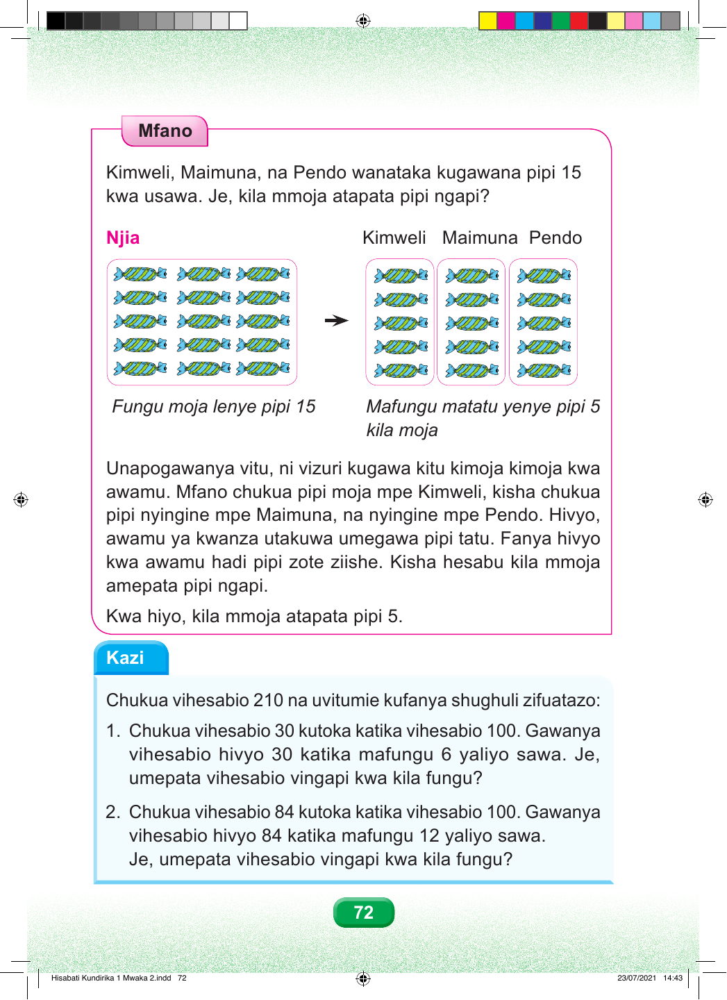

Mfano Kimweli, Maimuna, na Pendo wanataka kugawana pipi 15 kwa usawa. Je, kila mmoja atapata pipi ngapi? Njia Kimweli Maimuna Pendo Fungu moja lenye pipi 15 Mafungu matatu yenye pipi 5 kila moja Unapogawanya vitu, ni vizuri kugawa kitu kimoja kimoja kwa awamu. Mfano chukua pipi moja mpe Kimweli, kisha chukua pipi nyingine mpe Maimuna, na nyingine mpe Pendo. Hivyo, awamu ya kwanza utakuwa umegawa pipi tatu. Fanya hivyo kwa awamu hadi pipi zote ziishe. Kisha hesabu kila mmoja amepata pipi ngapi. Kwa hiyo, kila mmoja atapata pipi 5. Kazi Chukua vihesabio 210 na uvitumie kufanya shughuli zifuatazo: 1. Chukua vihesabio 30 kutoka katika vihesabio 100. Gawanya vihesabio hivyo 30 katika mafungu 6 yaliyo sawa. Je, umepata vihesabio vingapi kwa kila fungu? 2. Chukua vihesabio 84 kutoka katika vihesabio 100. Gawanya vihesabio hivyo 84 katika mafungu 12 yaliyo sawa. Je, umepata vihesabio vingapi kwa kila fungu? 72 Hisabati Kundirika 1 Mwaka 2.indd 72 23/07/2021 14:43